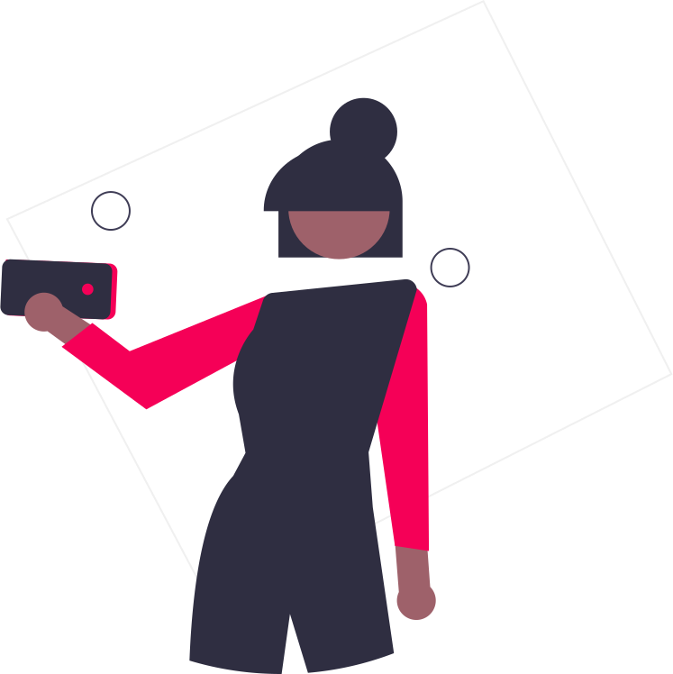

手話学習の
ファーストステップ
Shuwagateは指文字を学習するためのWebアプリです。 指文字とは「あ」,「a」などの書記言語を手で表現したものです。 指文字を学習することで、手話では表現できない単語などを表現することができ、よりコミュニケーションの幅が広がります。 指文字を学ぶことは手話を学ぶことよりもシンプルで、手話を学んでいないという人もすぐに覚えることができます。 Shuwagateで手話学習の第一歩を踏み出してみませんか。
体験する指文字学習をより直感的に
Shuwagateを利用することで、自分の手の形を確認しながら指文字を学習することができます。 ゲーム感覚で直感的かつ楽しく学習できるので効率的です。
